运动控制概览¶
本部分介绍机器人从基础运动学到高级行为技能的控制体系。
机器人运动控制¶
在机械设计/构型设计一节中已经介绍过人形机器人的几个时期，以及每个时期对应的控制算法。人形机器人控制算法经历了ZMP->优化控制->强化学习这三个阶段，ZMP的内容其实很少，在构型设计一节中的几个公式大概就是全部了。本节再详细介绍一下优化控制和强化学习。
对比网上诸位控制大佬，我的功底不深，这一节仅供初学者参考。
优化控制¶
优化控制的本质思想是建模机器人+求解控制量，建模就是通过物理学公式算出来机器人的动力学方程，求解控制量就是求解优化方程。这么说很抽象，我们从一个简单的例子来解释。
LQR与线性倒立摆¶
在学校的控制课上应该都学过LQR，如果没学过可以参考最优控制DR_CAN。对于一些简单的模型，我们使用LQR来求解反馈矩阵。对于一个倒立摆来说，我们取基座位置、速度，摆的角度角速度作为状态变量。输入量是对基座的水平力，通过物理公式计算出微分方程，因为假设摆的角度很小，所以sin和cos函数可以取近似值，由此变成线性微分方程。优化控制中为了方便求解，都将微分方程转换为状态空间方程，如下图左下角形式。线性状态空间方程本质上就是一阶微分方程矩阵形式。
最后写出代价函数（Cost Function），下图右上角是LQR基本形式，无限时间下，状态量与输入量的二次型（Q、R是对角正定矩阵），约束是状态空间方程。我们最后希望求解\(u\)让\(J\)最小，即求解一个输入量，让系统在某一个时间系统状态和输入量为0。写成标准形式的LQR，我们可以通过固定公式求解。
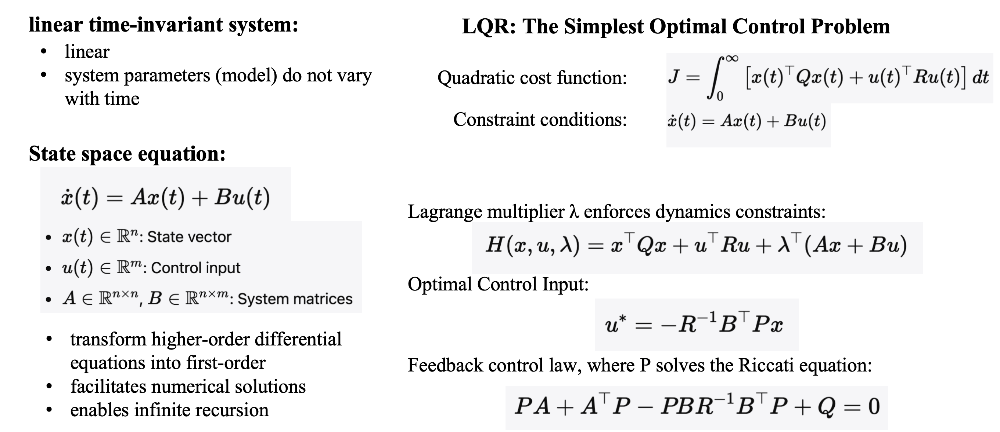
下图为倒立摆方程，左上角为倒立摆线性微分方程，左下角为倒立摆状态空间方程。右上角为反馈控制图，LQR求解的就是反馈矩阵\(K\)。最终控制律为\(u=-Kx\)。最后通过反馈控制可以让倒立摆最终停在\(x=（0,0,0,0）\)的位置，即摆在原点不动，且角度为0。
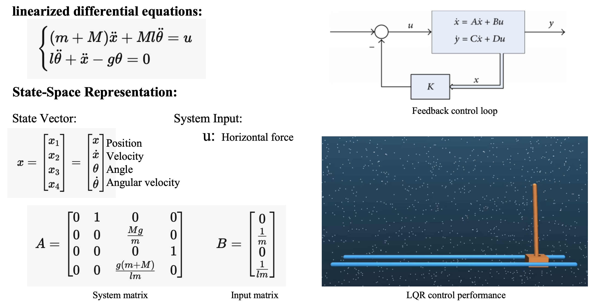
MPC与WBC¶
刚才是一个简单的倒立摆，我们很容易建立模型，但是线性倒立摆仍是简化模型，简化模型之后可以在无限时间优化。但是实际机器人模型要很复杂，并且我们通常无法求解无限时间最优值，我们只能求解有限时间最优值。下图是离散情况的线性MPC。代价函数同样是二次型的形式，只不过MPC通常求解输入量最终让状态量达到我们希望的参考值。约束是状态空间方程，以及其他等式或不等式约束。求解线性MPC使用QP求解器。
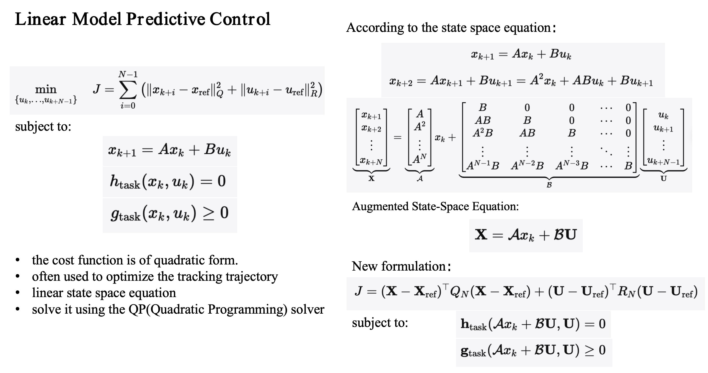
对于非线性模型，也有非线性MPC，用SQP来求解。
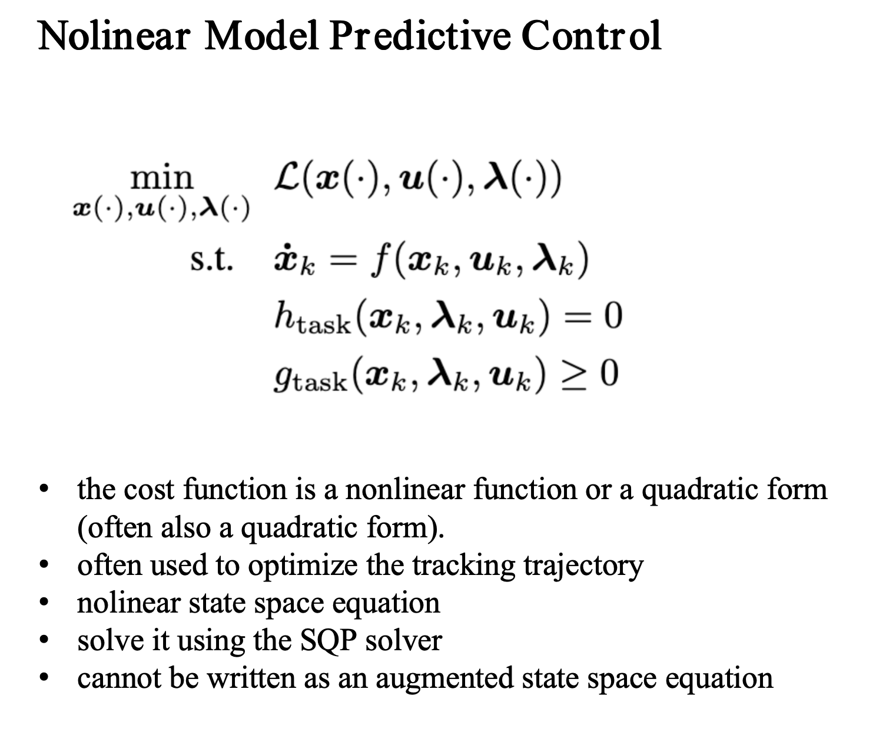
WBC有很多种解释，在机械臂上有零空间投影法解算关节力矩，这个也叫Whole Body Control。在机器人上如果通过优化方程解算出来所有关节的控制量（位置或力矩）也可以叫WBC。现在人形机器人有很多文章，只要policy action是全身关节位置也可以叫WBC。但是在MPC+WBC的语境下WBC指的是第二种解释，即优化方程解算全身关节指令。
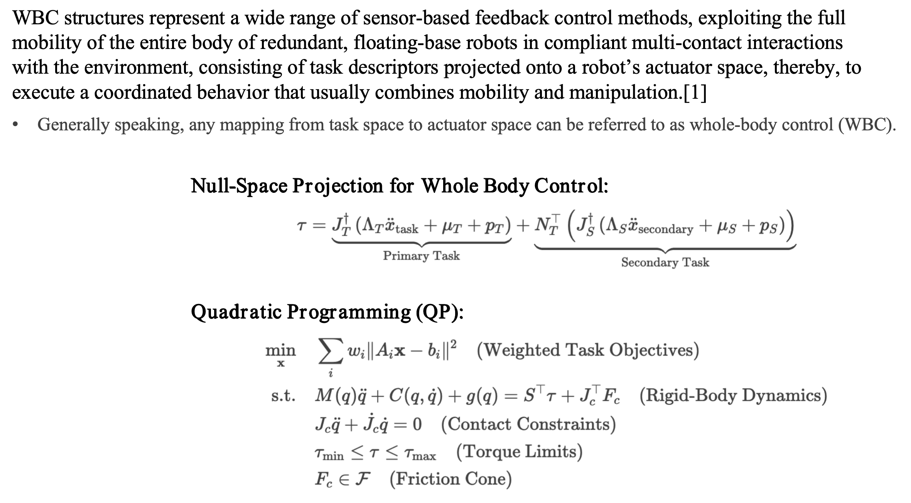
我们下面讲下Cheetah的案例。虽然它不是人形机器人，而是四足机器人，但是这个方案非常重要。Cheetah使用的是MPC+WBC的双层控制器。和上面倒立摆的控制过程一样，第一步是建模，由于MPC是时序滚动优化，所以我们希望减少MPC的计算量，在建模的时候使用单刚体模型（SRBD），即认为四足狗的模型是一个长方体，腿没有质量，但是四条腿受到地面向上的支撑力，微分方程输入量就是4个足底力，状态量就是刚体的位姿和速度。由此建立状态空间方程，MPC解的是给定期望速度的情况下，机器人四条腿应该受到多少足底力。
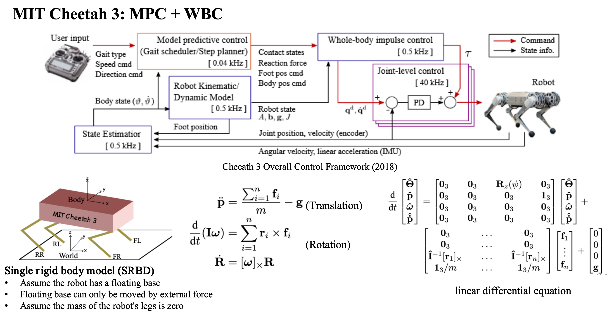
解出来足底力之后还不够，因为机器人控制量应该是关节指令。下一步WBC优化方程通过规划的足底力，用全身动力学模型（这个不再是简化模型，而是精确的多刚体动力学方程）解算出需要的关节加速度，最后算出来关节期望位置，发送到关节PD控制器中。
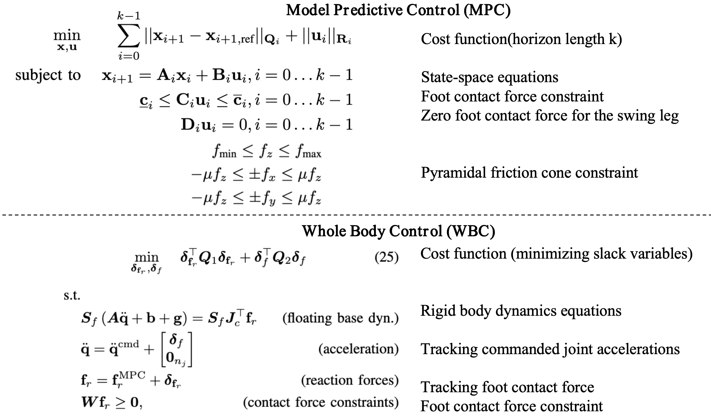
Cheetah使用MPC+WBC的分层框架实现行走、跑步等能力，这个时候难免产生疑问，为什么MPC用简化模型WBC用完整模型？因为MPC是滚动优化，算力不支持解那么复杂的非线性方程，WBC只优化一帧，并且频率高于MPC。那是不是如果算力够的情况下用完整动力学模型MPC可以达到更好的控制效果？没错，之前的优化控制最大的问题就是如何在计算复杂度和建模精确度之前权衡，来达到最好的控制效果。
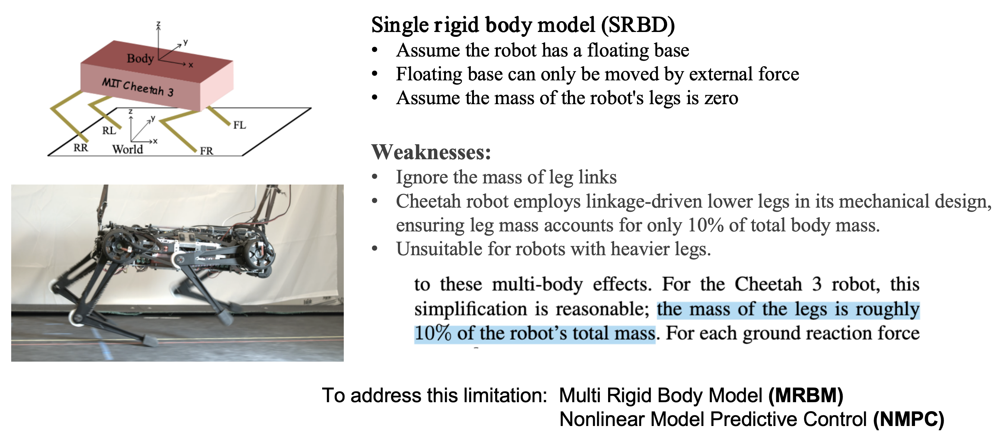
全身动力学的MPC+WBC¶
下面介绍一个使用全身动力学模型的傅利叶GR-1人形机器人控制案例。这个是马礼骞学长的本科毕设，这个也是借鉴了ETH的OCS2,以及Qiayuan Liao的legged_control。机器人全身动力学模型就是多刚体动力学公式，这个公式就是机器人最准确的建模。虽然用了全身动力学模型，但是MPC优化同样需要简化，原因同上，我们只取前6行，即身体的加速度，但是相比单刚体模型考虑了腿部关节的影响。
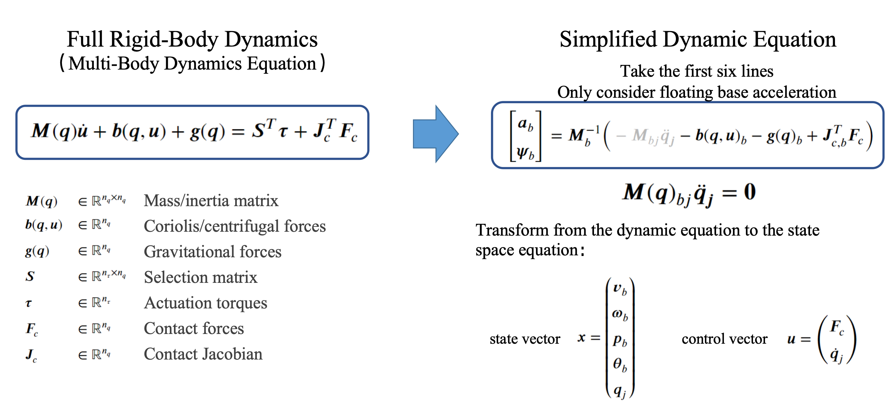
与Cheetah不同的是，这个方案的MPC不规划足底力，而是规划身体参考轨迹。先通过足部步态规划与逆运动学解算得到一个参考轨迹，然后通过MPC加入动力学模型约束得到符合动力学的参考轨迹。MPC在这里是轨迹优化器。
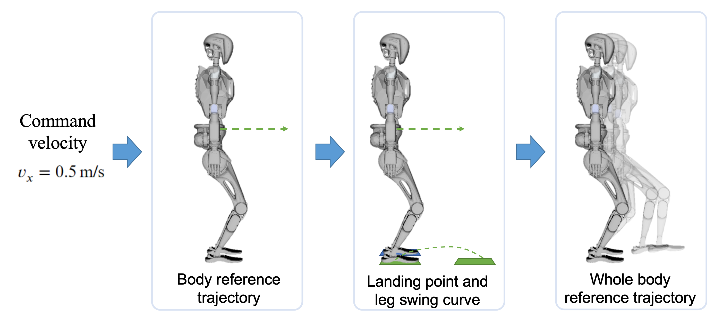
控制顺序和Cheetah一样，MPC作为规划器，WBC输出关节力矩。WBC采用完整全身动力学模型作为约束。
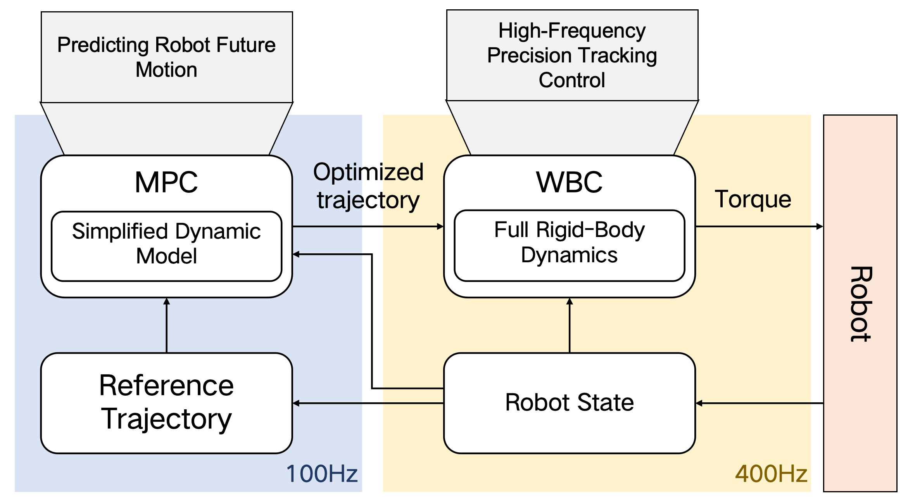
后面就是求解非线性MPC以及线性WBC的公式。
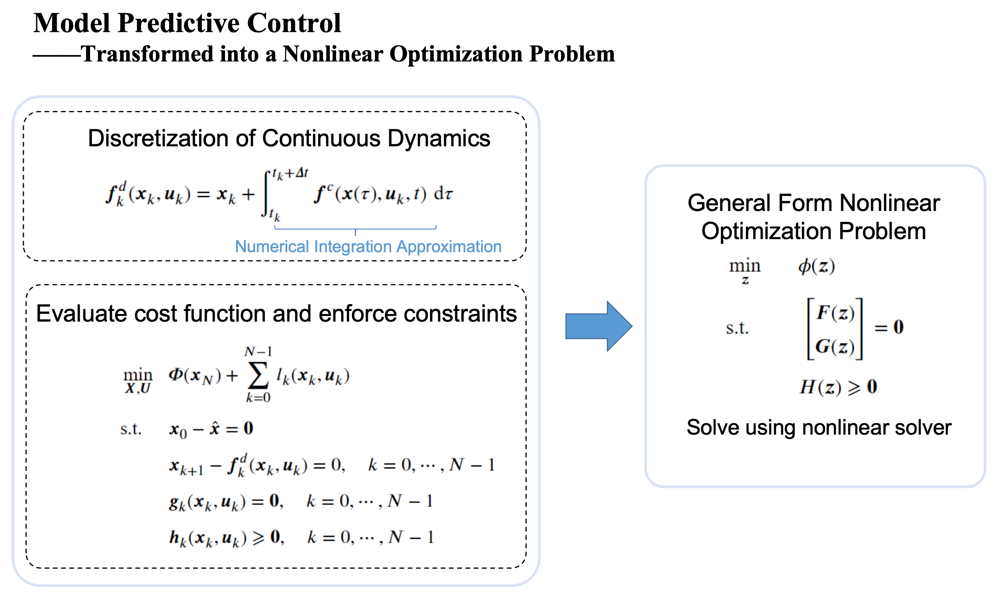
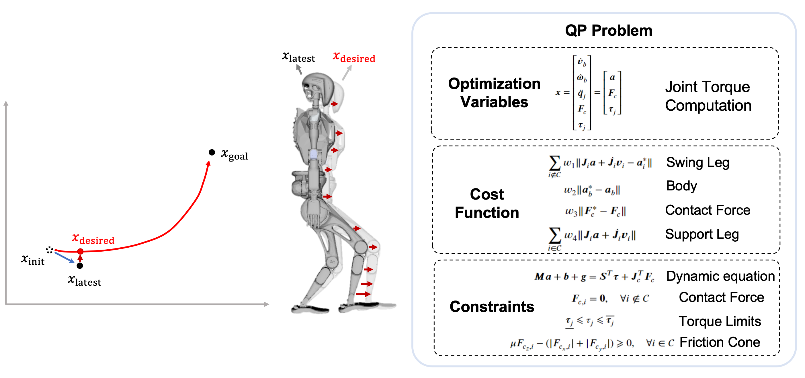
波士顿动力Atlas¶
可以看到，优化控制对于人形和四足来说，框架是类似的，解算也是差不多的，最关键的是在于怎么建模，以及优化的控制量是什么。那有没有从头到尾都用全身动力学模型的呢？有的，但是仍绕不开算力不够的问题，波士顿动力的想法非常激进，就是离线计算MPC，将优化好的轨迹用在线MPC+WBC去跟踪。
Atlas有一个动作库，实际运行会执行动作模板，好处是控制效果很好，坏处是只能执行预先定义好的动作。
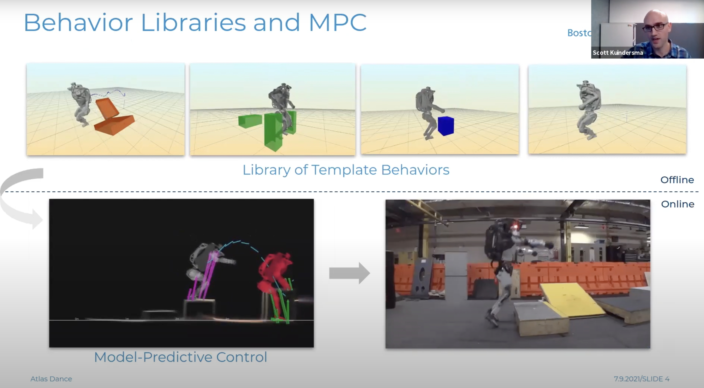

Atlas的方案和公开的论文的方案其实差不多，他们可以做到复杂动作以及空翻这种高难度动作更多依赖于他们强大的工程能力。Atlas V1就是单刚体模型，和Cheetah的方案类似，V2是全身动力学模型，和上面讲得人形机器人控制方案类似，V3就是加入了工具的建模，但本质还是优化控制方案。
在Youtube上可以看Atlas的方案讲解：波士顿动力控制方案talk。
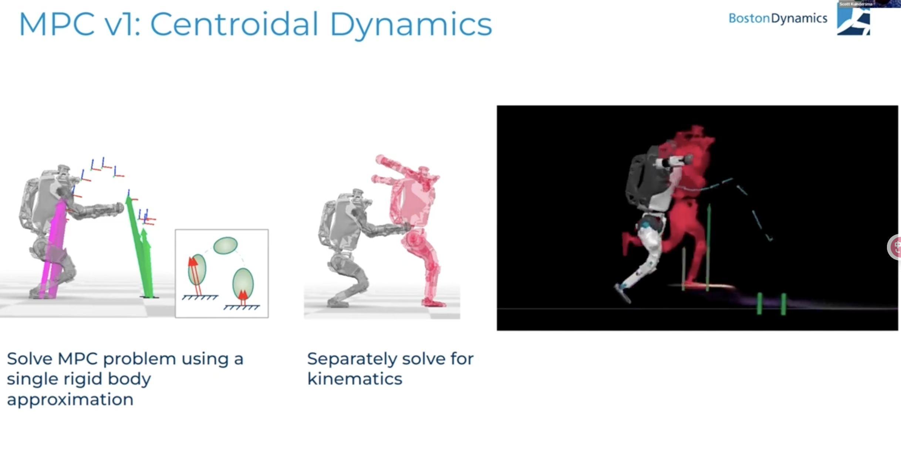
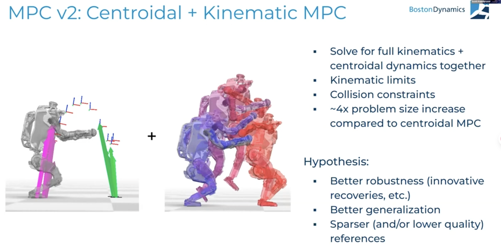
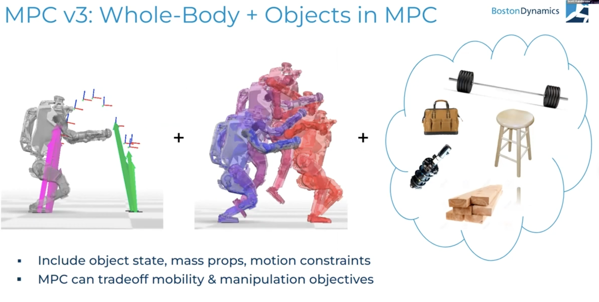
看了上面这几个方案，到现在应该对机器人优化控制有了一些理解，实际上真正的难点在于怎么对机器人进行建模，下图介绍了3种：1.规划接触力，通过简化模型计算MPC，通过WBC计算驱动力矩；2.完整动力学模型规划轨迹，WBC计算力矩；3.计算接触，然后完整动力学的MPC。其实组合还可以更多，就看怎么权衡模型精度、计算量以及任务需求。
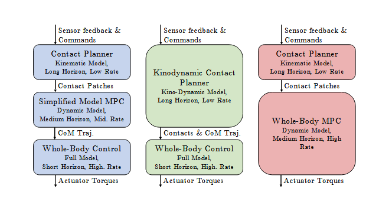
强化学习¶
优化控制总是需要简化模型，有没有什么方式能够使用最完整的动力学模型，并且在有限算力下能实现好的控制效果？有的，这就是现在流行的强化学习控制器。机器人强化学习是指让机器人通过与环境不断交互，依据“状态—动作—奖励”的反馈机制自主学习控制策略的方法。机器人在执行动作后，会根据结果获得奖励或惩罚，并逐步调整决策，使累计回报最大化。
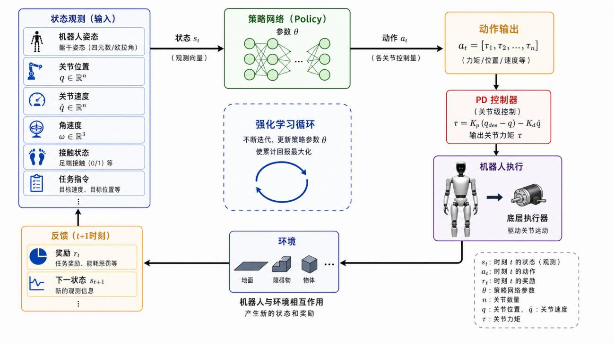
优化控制计算量取决于MPC的模型复杂度以及预测时长，强化学习控制器的计算量取决于policy的参数量，但基本上都用3层MLP，所以计算量并不成问题；优化控制的模型取决于怎么建模，强化学习控制器在学习过程中的模型始终是仿真器模型，也就是完整的多刚体动力学模型，并且摩擦、碰撞都可以根据精细的机械设计模型来模拟。要注意到优化控制中的多刚体动力学模型是：
右边\(F_c\)是外力，也就是说优化控制器必须知道外力的大小、方向以及作用点，才能将外力放在模型中计算，但是在机器人上这无法实现，因为机器人还没有全身触觉传感器，以及地面的摩擦，碰撞都是近似计算，所以强化学习控制器的天然优势就是能在使用完整动力学模型的情况下，还能包含外力、地形的计算。强化学习控制器可以通过机器人IMU、关节位置变化来识别外力信息并做出相应的恢复动作，这是优化控制器无法做到的事情。
训练强化学习控制器一般先在一个仿真器中训练，然后Sim2Sim到另一个仿真器中验证，最后Sim2Real迁移到真机中。

因为强化学习除了基础公式以外并没有太多公式，并且大家方案都差不多，而且网上教学文档很多，这里不再详细讲述，我们后面会讲AMP和Mimic的方案。
参考文献¶
[1] Gu, Z., Li, J., Shen, W., Yu, W., Xie, Z., McCrory, S., ... & Zhao, Y. (2025). Humanoid locomotion and manipulation: Current progress and challenges in control, planning, and learning. arXiv preprint arXiv:2501.02116.
[2] Moro, F. L., & Sentis, L. (2019). Whole-body control of humanoid robots. Humanoid robotics: a reference, 1161-1183.
[3] Kim, D., Di Carlo, J., Katz, B., Bledt, G., & Kim, S. (2019). Highly dynamic quadruped locomotion via whole-body impulse control and model predictive control. arXiv preprint arXiv:1909.06586.
[4] Di Carlo, J., Wensing, P. M., Katz, B., Bledt, G., & Kim, S. (2018, October). Dynamic locomotion in the mit cheetah 3 through convex model-predictive control. In 2018 IEEE/RSJ international conference on intelligent robots and systems (IROS) (pp. 1-9). IEEE.
[5] Grandia, R., Jenelten, F., Yang, S., Farshidian, F., & Hutter, M. (2023). Perceptive locomotion through nonlinear model-predictive control. IEEE Transactions on Robotics, 39(5), 3402-3421
[6] Wensing, P. M., Posa, M., Hu, Y., Escande, A., Mansard, N., & Del Prete, A. (2023). Optimization-based control for dynamic legged robots. IEEE Transactions on Robotics, 40, 43-63.
[7] Rudin, N., Hoeller, D., Reist, P., & Hutter, M. (2022, January). Learning to walk in minutes using massively parallel deep reinforcement learning. In Conference on Robot Learning (pp. 91-100). PMLR.
[8] https://github.com/roboterax/humanoid-gym